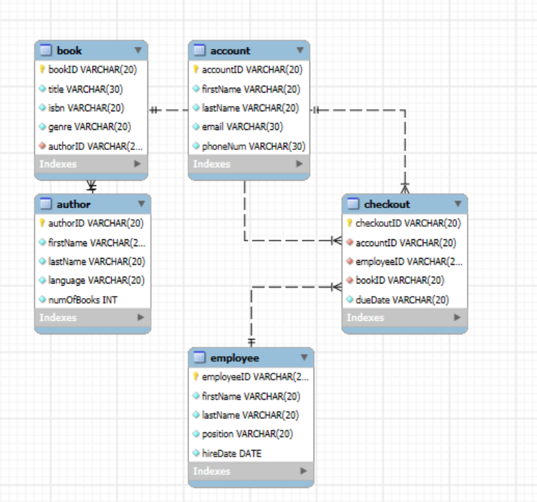
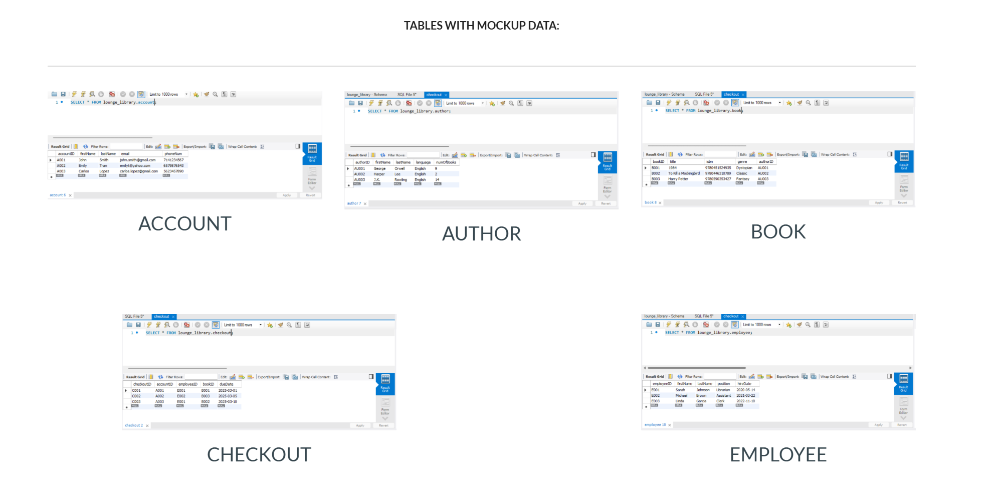

Project Overview
This project was built around a library operations scenario with members, books, loans, staff, branches, and related transactions. The goal was to model the business process clearly enough that the database could support day-to-day operations and analytical questions.
The final design emphasizes normalized tables, consistent relationships, and a structure that keeps operational records clean while making reporting easier.
Schema Design
The schema separates core entities so each table has a clear purpose. Relationships connect operational activity back to members, books, branches, and employees.

Implementation Highlights
Normalized Structure
Separated major concepts into focused tables to reduce redundancy and make the data easier to maintain.
Relationship Mapping
Used primary and foreign keys to connect the flow of loans, members, books, branches, and staff.
Query Planning
Designed with common reporting questions in mind, including inventory, loan activity, and member usage.
Operational Context
Modeled the database around realistic library workflows rather than isolated technical tables.
Database Workspace
The schema was implemented and reviewed in MySQL Workbench to confirm the table structure and relationships.

What I Learned
- How to translate a business process into a relational database structure.
- Why normalization matters for accuracy, maintenance, and reporting.
- How ERDs help communicate database logic before implementation.
- How to think about downstream questions while designing upstream tables.